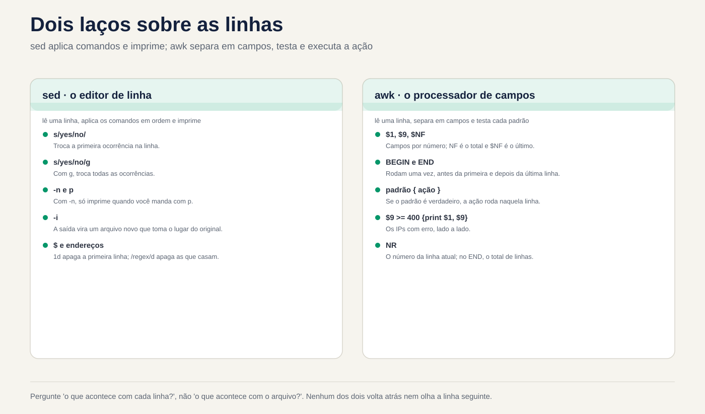
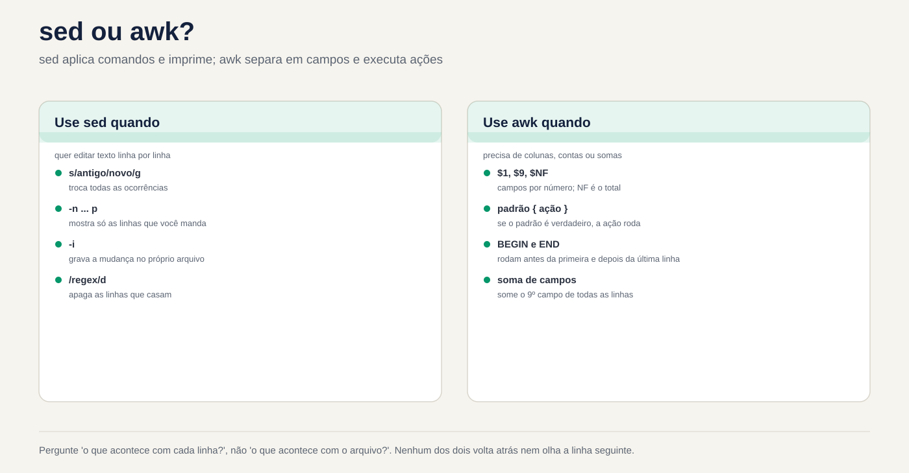

Lezione 3.4 · sed e awk
Nella lezione 3.3 hai scelto le righe con grep. Oggi fai le altre due cose che ogni amministratore fa con il testo: cambia righe e calcola con le colonne. sed scambia, cancella e inserisce righe, sullo schermo o all'interno del file. awk separa ogni riga in campi, filtra per valore, somma, conteggio e formato. Entrambi sono piccoli, sono su ogni macchina Linux e sono esattamente ciò che utilizza uno script di produzione quando deve modificare un file di configurazione o prendere un numero da un registro. Alla fine, completerai la sfida del Modulo 3: i dieci IP che hanno creato più password sbagliate in SSH, su una riga di comando, su entrambe le VM.
| File | lezione 3.4 |
|---|---|
| Modulo | M3 · Testo ed editor, lezione 4 di 5 |
| Quando | Settimana 8 |
| Alla fine puoi | Mostra, cancella e scambia righe con sed, per numero, per intervallo e per regex; utilizzare i gruppi, & e un altro delimitatore in s///; modificare un file sul posto con sed -i senza perdere nulla, con copia e controllo; separare i campi con awk, con il separatore standard e con -F; filtra per valore, aggiungi, conta con i vettori e formatta con printf; incrociare due file con NR == FNR; passare variabili di shell a awk senza combattere con le virgolette; sapere quando uno script awk di Rocky (gawk) non viene eseguito allo stesso modo su Debian (mawk); elenca gli IP che hanno avuto il maggior numero di password sbagliate in SSH, nei file e nel journal |
| Articoli di prova | LPIC-1 103.2 (il sed tra i filtri di testo) · LPIC-1 103.7 (il sed con le espressioni regolari) · awk non è nell'elenco ufficiale LPIC-1 o RHCSA, ma è in quasi tutti gli script di produzione |
| Prerequisiti | lezione 3.1 (virgolette, tubi, <( )); lezione 3.2 (cut, sort, uniq -c, ~/lab32/acesso.log); lezione 3.3 (BRE ed ERE, ~/lab33 con campioni) |
| Tempo | Intorno alle 2:30 |
| Istantanee | m3a4-start e m3a4-end su entrambe le VM |
1 · Riscaldamento
Tre domande, appena mi vengono in mente. Scrivi le risposte; la chiave di risposta controlla alla fine.
- Si esegue
sed 's/yes/no/' app.confe sullo schermo viene visualizzato il file con la modifica apportata. Indovina:app.confè cambiato? - In un registro SSH la data è
Nov 3con due spazi perché il giorno ha una sola cifra. Indovina: cosa mostracut -d' ' -f2in questa riga? Eawk '{print $2}'? - Uno script
awkfunziona su Rocky. Copi lo stesso file su Debian, eseguilo e non dà alcun errore. Intuizione: potrebbe uscire un risultato diverso?
2 · Perché è importante
Quasi tutti i disastri con sed e awk si verificano in un'unica riga, senza messaggio di errore:
| Il cosiddetto | La risposta sbagliata | Cosa provoca |
|---|---|---|
"Cambia il server della banca dati da 10.1.0.40 a 10.1.0.41 in app.conf" | sed 's/10.1.0.40/10.1.0.41/' app.conf | Lo schermo mostra la modifica, ma il file rimane lo stesso: senza -i, sed scrive solo in uscita. E il punto regex corrisponderebbe comunque a 10a1b0c40 |
"Rimuovi il commento PermitRootLogin di sshd_config" | sed -i 's/^#//' /etc/ssh/sshd_config | Elimina il commento da tutte le righe che iniziano con #, comprese le frasi esplicative. sshd non accetta la configurazione e non sale al successivo riavvio. Se eri connesso tramite SSH, è stata l'ultima volta |
| "Disattiva la password in SSH e mostra cosa è cambiato" | sed -n -i 's/yes/no/p' arquivo | -n con -i scrive nel file solo le righe stampate. Il file di configurazione diventa una singola riga. Se eseguito di nuovo, diventa un file vuoto |
| "Quanti byte sono stati scaricati da ciascun IP oggi?" | cut per eliminare le colonne e la somma in un foglio di calcolo | Mezz'ora di copia e incolla. Un awk '{b[$1] += $10} END {...}' risponde in un secondo e riprende domani |
| "Elimina il giorno di ogni riga nel registro SSH" | cut -d' ' -f2 | Funziona dal giorno 10 al 31 e restituisce una riga vuota dal giorno 1 al 9 perché i giorni a una cifra hanno due spazi. Lo script supera il test e fallisce nella prima settimana del mese |
| "Il report funziona su Rocky; su Debian esce vuoto" | Copia lo stesso script da awk in entrambi | Rocky ha gawk; Debian, mawk. Una funzionalità solo di gawk potrebbe semplicemente non funzionare in mawk, senza alcun errore |
sed e awk non sono difficili. Sono letterali: fanno esattamente ciò che è scritto, su tutta la riga, su ogni riga. Chi lo conosce lo prova prima sullo schermo e solo dopo lo scrive nel file.
3 · Modello mentale
sedeawksono un cappio sulle righe.sedlegge una riga, applica i comandi, in ordine, e stampa il risultato.awklegge una riga, la separa in campi, testa ogni modello ed esegue l'azione di coloro che hanno abbinato. Nessuno dei due torna indietro o guarda la riga successiva (a meno che tu non lo chieda). Pensa sempre a "cosa succede a ogni riga?", non a "cosa succede al file?".
sed 's/yes/no/' app.conf
┌─────────────┐ lê uma linha ┌──────────────────┐ aplica s/yes/no/ ┌──────────────┐
│ app.conf │ ────────────────► │ espaço de padrão │ ───────────────────► │ imprime │
│ (só leitura)│ │ "Password... yes"│ (só a 1ª vez, │ na saída │
└─────────────┘ └──────────────────┘ sem o g) └──────────────┘
e repete para a próxima linha. Com -n, só imprime quando você manda (p).
Com -i, a "saída" é um arquivo novo que, no fim, toma o lugar do original.
awk '$9 >= 400 {print $1, $9}' acesso.log
linha: 192.168.5.7 - - [03/Nov/2026:08:02:30 +0100] "POST /login HTTP/1.1" 401 128
└── $1 ───┘ $2 $3 └──────── $4 ────────┘ └$5─┘ └─$6─┘ └─$7─┘ └─ $8 ──┘ $9 $10
NF = 10, $NF = $10
BEGIN { ... } roda uma vez, antes da primeira linha
padrão { ação } para cada linha: se o padrão é verdadeiro, roda a ação
END { ... } roda uma vez, depois da última linha (NR = total de linhas)Due conseguenze pratiche. Primo: sed senza -i mai cambia il file, quindi puoi provare a piacimento. Secondo: awk separa i campi con qualsiasi sequenza di spazi e tabulazioni e ignora gli spazi all'inizio della riga. Ecco perché non scatta su Nov 3 e cut -d' ' scatta.


4 · Layered Concept
Essential
O sed, l'editor dello stream. Il nome deriva da stream redattore. Riceve testo da un file o da una pipe e scrive il risultato nell'output. La forma per quasi tutti gli usi è:
sed [opções] 'endereço comando' arquivoL'indirizzo indica su quali linee agisce il comando; senza indirizzo, agisce su tutti. Il comando indica cosa fare:
| Comando | Fare | Esempio |
|---|---|---|
p | Stampa la riga (di nuovo, se non hai usato -n) | sed -n '3p' arq mostra solo la riga 3 |
d | Elimina la riga di output | sed '1d' arq mostra tutto tranne la riga 1 |
s/regex/troca/ | Cambia la prima sezione che corrisponde a | sed 's/yes/no/' arq |
s/regex/troca/g | Scambia tutte le parti che corrispondono, nella riga | sed 's/:/ /g' arq |
q | Smetti di leggere | sed '5q' arq è un head -n 5 |
| Indirizzo | Quali linee | Esempio |
|---|---|---|
N | Numero di riga N | sed -n '3p' |
$ | L'ultimo | sed -n '$p' è un tail -n 1 |
N,M | Da N a M | sed -n '2,4p' |
/regex/ | Quelli che corrispondono alla regex | sed -n '/401/p' è un grep 401 |
/a/,/b/ | Dal primo che sposa a al successivo che sposa b | sed -n '/^Port/,/^Password/p' |
endereço! | Quelli che non sono dall'indirizzo | sed '/^#/!d' lascia semplicemente i commenti |
E le tre opzioni che usi ogni giorno:
| Opzione | Fare |
|---|---|
-n | Non stampa nulla da solo; solo quello che invii con p |
-E | Regex estesa, come grep -E della lezione 3.3: +, ?, {}, | e ( ) senza barra |
-i | Scrive il risultato nel file stesso. -i.bak ne memorizza invece una copia con il suffisso .bak |
O awk, il linguaggio delle colonne. awk legge ogni riga, la separa in campi ed esegue un programmino. Il formato è:
awk 'padrão { ação }' arquivoNessun modello, l'azione si svolge su tutta la riga. Senza azione, la riga corrispondente viene stampata interamente. I nomi che devi sapere:
| Nome | È | Esempio |
|---|---|---|
$0 | Tutta la linea | awk '{print $0}' è un cat |
$1, $2... | Il primo, il secondo campo... | awk '{print $1}' |
NF | Quanti campi ha la riga | $NF è l'ultimo campo; $(NF-1), il penultimo |
NR | Il numero di riga corrente (alla fine, il totale) | awk 'NR == 3' è sed -n '3p' |
-F | Il separatore di campo | awk -F: '{print $1}' /etc/passwd |
BEGIN, END | Prima della prima riga, dopo l'ultima | awk 'END {print NR}' è un wc -l |
I modelli sono confronti ($9 >= 400, $1 == "10.1.0.20"), regex (/Failed password/, $7 ~ /^\/api/) o entrambi con &&, || e !. Le variabili non hanno bisogno di essere dichiarate: iniziano con zero o con testo vuoto. Per questo motivo conta {n++} e {soma += $10} aggiunge.
Le virgolette. Il programma per awk e sed è sempre racchiuso tra virgolette semplici. $1 di awk è il primo campo; il $1 della shell è il primo argomento dello script. Tra virgolette doppie, la shell scambia il suo $1 prima che il awk veda.
Intermedio
Il s/// all'interno.
| Parte | Fare | Esempio e risultato |
|---|---|---|
& | L'intera sezione che si è sposata | echo 'Port 22' | sed 's/[0-9][0-9]*/[&]/' mostra Port [22] |
\(...\) e \1 | Gruppo in BRE e riferimento ad esso | sed 's/^\([^ ]*\) .*/\1/' lascia solo la prima parola |
(...) e \1 con -E | Lo stesso, presso ERE | sed -E 's/^([^ ]+) .*/\1/' |
g | Tutte le occorrenze della riga | s/\//_/g |
| Un numero | Solo l'ennesima occorrenza | s/\//_/2 cambia solo la seconda battuta |
I (GNU) | Ignora le lettere maiuscole | s/passwordauthentication/PA/I |
p con -n | Stampa solo le righe in cui è stata apportata una modifica | sed -n 's/^Port /porta: /p' |
| Un altro delimitatore | Qualsiasi carattere immediatamente dopo s diventa | s|/home/rodrigo|~| invece di s/\/home\/rodrigo/~/ |
Il delimitatore è la prima cosa che salva un sed con percorsi. Con una sbarra ogni / del sentiero necessita di \/, ed il comando diventa una staccionata in legno. Con |, # o , è leggibile.
Più comandi. Separare con ; oppure utilizzare più -e. I comandi vengono eseguiti in ordine, sulla stessa riga:
sed '/^[[:space:]]*#/d; /^[[:space:]]*$/d' conf.amostra
sed -e 's/yes/no/' -e '/^#/d' conf.amostraIl primo è grep -Ev '^[[:space:]]*(#|$)' della lezione 3.3, scritto in sed. L'ordine conta: se la prima modifica trasformasse una riga in un commento, la seconda la vedrebbe già commentata.
Inserisci, aggiungi, modifica l'intera riga. In GNU sed, in una sola riga:
| Comando | Fare | Esempio |
|---|---|---|
i texto | Inserisci una riga prima | sed '1i # gerado pelo lab' arq |
a texto | Aggiungi una riga dopo | sed '/^Port/a # porta padrão' arq |
c texto | Cambia l'intera riga | sed '/^MaxAuthTries/c MaxAuthTries 4' arq |
y/abc/xyz/ | Scambia carattere per carattere, come tr | sed 'y/abc/ABC/' |
l | Mostra la linea con quelli invisibili, come cat -A | sed -n '9l' conf.amostra mostra \t#ListenAddress 0.0.0.0$ |
Il awk che calcola.
| Vuoi | Programma |
|---|---|
| Conta le righe che corrispondono a | '$9 >= 400 {n++} END {print n+0}' |
| Aggiungi una colonna | '{soma += $10} END {print soma}' |
Contare per valore (sort | uniq -c di awk) | '{c[$9]++} END {for (s in c) print s, c[s]}' |
| Aggiungi per valore | '{b[$1] += $10} END {for (ip in b) print b[ip], ip}' |
| Formato | printf "%-15s %10d\n", ip, b[ip]: testo allineato a sinistra in 15 posizioni, testo allineato a destra in 10 |
| Ricevi un valore dalla shell | awk -v lim="$LIMITE" '$10 > lim' |
| Regex in un campo | '$7 ~ /^\/api/' e '$6 !~ /GET/' |
| Funzioni di testo | length($1), substr($4, 2, 11), tolower($0), split($4, p, ":") |
| Cambio in campo | sub(/regex/, "troca", $7) scambia il primo; gsub cambia tutto |
| Passa alla riga successiva | next |
c[$9]++ è un vettore associativo: l'indice è il testo stesso, "200", "401", "10.1.0.20". Questo è ciò che rende il awk così utile per la segnalazione. Un avvertimento: for (x in v) scorre gli indici in un ordine non garantito e che cambia tra gawk e mawk. Ogni volta che l'ordine è importante, invia l'output a sort.
Il separatore di output. In print $1, $2, la virgola diventa OFS, che vale uno spazio. Con -v OFS=';' diventa punto e virgola. Ma solo print, ovvero print $0, mostra la riga così come è stata inserita. Per ricomporre l'intera riga con il nuovo OFS modificare un campo: {$1 = $1; print}.
Ponte Windows
| Su Windows | Su Linux | Attenzione |
|---|---|---|
(Get-Content app.conf) -replace '^PasswordAuthentication yes$', 'PasswordAuthentication no' | sed 's/^PasswordAuthentication yes$/PasswordAuthentication no/' app.conf | PowerShell -replace ignora le lettere maiuscole per impostazione predefinita; sed, n. L'equivalente esatto è -creplace |
(Get-Content app.conf) -replace 'a', 'b' | Set-Content app.conf | sed -i 's/a/b/' app.conf | Le parentesi fanno sì che PowerShell legga l'intero file prima di scriverlo. Senza di essi Set-Content tenta di scrivere sul file ancora aperto in lettura e restituisce un errore. sed -i risolve questo problema scrivendo in un file temporaneo |
$1, $2 in -replace | \1, \2 in sed | Stessa idea di gruppo, sintassi diversa. In Notepad++ è anche \1 |
Get-Content acesso.log | ForEach-Object { ($_ -split '\s+')[0] } | awk '{print $1}' acesso.log | PowerShell conta da zero; awk, dà un |
Import-Csv -Delimiter ':' -Header nome,x,uid ... | awk -F: '{print $1, $3}' | Import-Csv comprende le virgolette in CSV; awk -F, non capisce |
Group-Object e Sort-Object Count -Descending | awk '{c[$1]++} END {...}' | sort -rn | |
Measure-Object -Property Bytes -Sum | awk '{s += $10} END {print s}' |
Avanzato
sed -i crea un nuovo file. Scrive il risultato in un file temporaneo, nella stessa cartella, e alla fine scambia l'originale con esso. GNU sed copia i permessi, ma il file è un altro, con un numero di inode diverso. Ciò ha tre conseguenze reali:
- Un link simbolico modificato con
sed -idiventa un file comune e il file a cui puntava rimane intatto. Per seguire il collegamento:sed -i --follow-symlinks. - Un hard link (lezione 2.8) non è più condiviso: l'altro nome continua a rimandare al vecchio contenuto.
- Un registro in fase di scrittura non deve essere modificato con
sed -i. Il programma continua a scrivere sul vecchio inode, senza più nome, e le nuove righe vanno perse, occupando spazio su disco fino al riavvio del programma.
-i.bak e il -ie che è fuorviante. Il suffisso della copia è incollato in -i. Ecco perché sed -ie 's/...//' arq non è "-i e -e": è -i con il suffisso e e accanto c'è un file arqe. Su macOS e BSD, -i richiede sempre il suffisso (sed -i '' ...). In uno script che deve essere eseguito in entrambi, è preferibile scrivere in un nuovo file e scambiarlo con mv.
Lo spazio di riserva. sed ha un secondo spazio, lo spazio di attesa, con i comandi h, H, g, G e x. Con esso puoi scrivere trucchi come sed -n '1!G;h;$p', che inverte il file come tac. Saper riconoscere; per scrivere cose del genere, usa awk, che è leggibile.
Separatori con regex. -F di awk accetta regex: -F'[ :]+' separa con qualsiasi sequenza di spazi e due punti. Ma -F, non capisce veramente il CSV: un campo "Rossi, Ana" diventa due. Per CSV con virgolette, gawk ha FPAT e esistono strumenti propri, come csvtool.
Numero o testo. Un campo che assomiglia a un numero viene confrontato come numero: $9 >= 400 funziona. Ma "80%" non sembra un numero. +0 forza la conversione e si ferma al primo carattere non numerico: $5+0 di 80% è 80. df si legge così: df -P | awk 'NR > 1 && $5+0 >= 80 {print $6, $5}'.
Due file. NR conta insieme le righe di tutti i file; FNR, solo quelli del file corrente. Mentre i due sono uguali, awk legge il primo file. È il modo classico di caricare una lista e usarla nella seconda, join promesso nella Lezione 3.2:
awk 'NR == FNR {bloq[$1]; next} $1 in bloq' bloqueio.txt acesso.loggawk e mawk. gawk ha estensioni che mawk non ha: gensub(), asort(), asorti(), IGNORECASE, PROCINFO["sorted_in"], FPAT, il bordo della parola -i inplace e \y. Una funzione che non esiste dà immediatamente un errore. Una variabile speciale che non esiste, come IGNORECASE, diventa una variabile comune e lo script viene eseguito in modo silenzioso, con un altro risultato. In Rocky, gawk --posix disattiva le estensioni e gawk --lint ti avvisa su quali hai utilizzato: entrambi testano la portabilità prima che lo script arrivi in Debian.
awk esegue anche comandi. system("...") e "comando" | getline eseguono cose nella shell. In uno script awk che non hai scritto, cerca questi due prima di eseguirlo con sudo.
Ciò che rientra in test
- LPIC-1 103.2 e 103.7.
sedappare in entrambi gli elenchi. Cadono:s///con e senzag,-nconp,dcon indirizzo,-i,-E, gruppi con\1e prevedono l'uscita di un piccolosed. Una domanda tipica: "quale comando scambia tutte le occorrenze diaconbsu ogni riga?" La risposta èg. - **
awk.** Nell'elenco degli obiettivi di LPIC-1 versione 5.0 e RHCSA,awknon appare per nome. Può apparire come alternativa in una domanda a scelta multipla. Controlla la versione corrente di entrambi gli elenchi sui siti Web LPI e Red Hat. Sul lavoro, a differenza del test, è indispensabile. - RHCSA. Il test è pratico e qualsiasi strumento che funzioni è valido. Un
sed -iben fatto in un file di configurazione fa risparmiare tempo; una cattiva azione costa la prova. L'abitudine di testare prima senza-ivale punti.
vim, con il suo :s/regex/troca/g, è di lezione 3.5 e utilizza la stessa regex di oggi.
5 · Rocky × Debian
| Articolo | laboratorio-roccioso (Rocky 9) | debian-lab (Debian 13) | Come controllare |
|---|---|---|---|
sed | GNU sed 4.8 | GNU sed 4.9 | sed --version | head -1 |
awk | gawk 5.1 | mawk 1.3.4 | readlink -f "$(command -v awk)" |
Versione awk | awk --version o awk -W version | awk -W version | -W version funziona su entrambi |
gawk Estensioni | Funzionano | gensub() dà errore; IGNORECASE viene ignorato, silenzioso | gawk --lint -f script.awk a Rocky |
| Prova portabilità | gawk --posix -f script.awk | mawk -f script.awk | Eseguirli entrambi e confrontare l'output con diff |
gawk disponibile | Prossimamente | Solo se qualcuno ha installato (apt install gawk) | command -v gawk |
| Password errata per accedere a SSH | /var/log/secure, registrato da rsyslog, con rotazione settimanale | Solo nella rivista, unità ssh | ls -l /var/log/secure*; journalctl -u ssh -n 3 |
| Diario | Volatile, a meno che non sia stato modificato nella lezione 2.3 | Permanente | ls -ld /var/log/journal |
| Nome del processo nel registro | sshd[PID] | Potrebbe sembrare sshd-session[PID], perché OpenSSH 10 ha separato il processo dalla sessione | journalctl -u ssh -n 5 -o short |
sed -i nel collegamento simbolico | Interrompere il collegamento | Interrompere il collegamento | ls -l prima e dopo |
La riga che attira maggiormente l'attenzione è awk. Entrambi sono veri awk, seguono POSIX ed eseguono il 95% dei programmi allo stesso modo. È nell'altro 5% che uno script copiato da un server all'altro dà un risultato diverso senza preavviso. Nella pausa B vedi accadere questo.
Anche A del processo. Un grep 'sshd\[' trova le righe di Rocky e potrebbe non trovarne alcuna in Debian 13. Ecco perché il lab filtra in base all'unità (journalctl -u ssh) e al testo (Failed password), e mai in base al nome del processo.
6 · Laboratorio guidato
Sei rodrigo, in rocky-lab e raggiungi debian-lab tramite ssh deb. Tutto avviene in ~/lab34, su entrambe le VM. sed -i viene utilizzato solo nelle copie all'interno della cartella del laboratorio. I file di sistema e i registri effettivi vengono solamente letti. Il passaggio 7 è la sfida del Modulo 3.


Passaggio 0 · Istantanea, cartella e file di laboratorio
In Proxmox, acquisisci l'istantanea m3a4-inicio delle due VM. In rocky-lab:
eval "$(ssh-agent -s)"; ssh-add
ssh -o BatchMode=yes deb hostname
mkdir -p ~/lab34; ssh deb 'mkdir -p ~/lab34'
cd ~/lab34
cp ~/lab33/acesso.log ~/lab33/ssh.amostra ~/lab33/conf.amostra ~/lab33/bloqueio.txt .
wc -l acesso.log ssh.amostra conf.amostra bloqueio.txt 15 acesso.log
12 ssh.amostra
11 conf.amostra
3 bloqueio.txt
41 totalSe ne mancano alcuni, ricreali con il passaggio 0 della Lezione 3.3 (acesso.log proviene dalla Lezione 3.2). bloqueio.txt ha 203.0.113.9, 198.51.100.4 e una riga vuota alla fine, apposta. Ora le versioni, su entrambe le VM:
sed --version | head -1; readlink -f "$(command -v awk)"; awk -W version 2>/dev/null | head -1
ssh deb 'sed --version | head -1; readlink -f "$(command -v awk)"; awk -W version 2>/dev/null | head -1'In Rocky dovresti vedere GNU sed 4.8 e awk che punta a gawk, versione 5.1. Su Debian, GNU sed 4.9 e awk puntano a mawk, versione 1.3.4. Annota cosa è venuto fuori: il Break B dipende da questo. Copia i file su Debian:
scp acesso.log ssh.amostra conf.amostra bloqueio.txt deb:lab34/
ssh deb 'cd ~/lab34 && wc -l acesso.log ssh.amostra conf.amostra bloqueio.txt'Passo 1 · Mostrare ed eliminare
Prima di tutto, il sed come head, tail e grep:
sed -n '3p' acesso.log
sed -n '$p' acesso.log
sed -n '2,4p' acesso.log | cut -d' ' -f110.1.0.20 - - [03/Nov/2026:08:01:02 +0100] "GET /docs HTTP/1.1" 200 2048
10.1.0.20 - - [03/Nov/2026:08:07:30 +0100] "GET / HTTP/1.1" 200 5120
10.1.0.31
10.1.0.20
192.168.5.7Ora vuoi vedere i tentativi di accesso falliti, le righe con 401. E dimentica -n.
Decidi 1 · Quante righe mostra sed '/401/p' acesso.log | wc -l?
- A) 4
- B) 15
- C) 19
- D) 11
Scegli la lettera prima di guardare la tabella.
sed '/401/p' acesso.log | wc -l
sed -n '/401/p' acesso.log | wc -l19
4| Se hai selezionato | Risultato | Perché |
|---|---|---|
| A | ❌ Sbagliato | È il risultato con -n. Senza di essa, sed stampa ogni riga alla fine del ciclo e p stampa quelle che corrispondono nuovamente. |
| B | ❌ Sbagliato | Sarebbe vero se il p non facesse nulla. Cosa fa: stampa la riga ancora una volta. |
| C | ✅ Giusto | Le 15 righe, una volta ciascuna, più le 4 con 401 ripetute: 15 + 4 = 19. |
| D | ❌ Sbagliato | Queste sarebbero le righe senza 401 (15 − 4). Questo è sed '/401/d'. |
Da risolvere: p va quasi sempre con -n. Senza -n, p duplica le righe.
d fa il contrario: rimuove la riga dall'output. Questo è grep -Ev '^[[:space:]]*(#|$)' della lezione 3.3, in sed:
sed '/^[[:space:]]*#/d; /^[[:space:]]*$/d' conf.amostraPort 22
PermitRootLogin no
PasswordAuthentication yes
MaxAuthTries 3I due comandi vengono eseguiti in ordine sulla stessa riga. Una riga eliminata dalla prima non raggiunge la seconda: d termina immediatamente il ciclo di quella riga.
Passo 2 · Lo scambio: s, g e il delimitatore
Vuoi scambiare le barre di un percorso con caratteri di sottolineatura, per diventare un nome di file.
Decidi 2 · Cosa mostra echo 'GET /a/b/c HTTP/1.1' | sed 's/\//_/'?
- A)
GET _a_b_c HTTP_1.1 - B)
GET _a/b/c HTTP/1.1 - C)
GET /a/b/c HTTP/1.1, nessun cambiamento - D) Errore a causa della barra all'interno del motivo
Scegliere la lettera prima di guardare la tabella.
echo 'GET /a/b/c HTTP/1.1' | sed 's/\//_/'
echo 'GET /a/b/c HTTP/1.1' | sed 's/\//_/g'
echo 'GET /a/b/c HTTP/1.1' | sed 's|/|_|g'
echo 'GET /a/b/c HTTP/1.1' | sed 's|/|_|2'GET _a/b/c HTTP/1.1
GET _a_b_c HTTP_1.1
GET _a_b_c HTTP_1.1
GET /a_b/c HTTP/1.1| Se hai selezionato | Risultato | Perché |
|---|---|---|
| A | ❌ Sbagliato | Questo è il risultato con g. Senza di esso, s scambia solo la prima occorrenza di ciascuna riga. |
| B | ✅ Giusto | \/ è una barra letterale. La prima battuta della riga diventa _, il resto rimane com'era. |
| C | ❌ Sbagliato | Si è sposato ed è cambiato. s non cambia nulla solo quando la regex non corrisponde a nessun punto della riga. |
| D | ❌ Sbagliato | Con \ la barra non è più delimitatrice. Senza \, allora: s///_/ dà unknown option to 's'. |
Da correggere: senza g, solo la prima occorrenza di ogni riga. Con i percorsi, modificare il delimitatore: s|/|_|g viene letto per primo.
Il numero al posto di g sceglie quale occorrenza: 2 ha modificato solo la seconda barra. Due usi che ripeterai spesso: p con -n, che mostra solo le linee scambiate, e I, che ignora le lettere maiuscole.
sed -n 's/^Port /porta: /p' conf.amostra
sed -n 's/passwordauthentication/PA/Ip' conf.amostraporta: 22
PA yes
#PA noPasso 3 · Gruppi, & e la golosa regex
Da acesso.log, vuoi solo l'IP e il codice di stato. Con -E, le parentesi trattengono lo snippet, mentre \1 e \2 lo restituiscono:
sed -E 's/^([^ ]+) .*" ([0-9]{3}) .*/\1 \2/' acesso.log | head -410.1.0.20 200
10.1.0.31 200
10.1.0.20 200
192.168.5.7 401[^ ]+ è "uno o più caratteri diversi dallo spazio": l'intero IP e nient'altro. .*" inghiotte tutto fino all'ultima virgoletta seguita da uno spazio, mentre ([0-9]{3}) prende le tre cifre che seguono immediatamente. Per inviare un registro a un fornitore senza esporre le macchine, reimpostare l'ultimo ottetto:
sed -E 's/^([0-9]+\.[0-9]+\.[0-9]+)\.[0-9]+/\1.0/' acesso.log | cut -d' ' -f1 | sort -u
echo 'Port 22' | sed 's/[0-9][0-9]*/[&]/'10.1.0.0
192.168.5.0
203.0.113.0
Port [22]Il & è l'intera sezione che corrisponde, senza bisogno di un gruppo. Ora l'errore che tutti commettono una volta. Vuoi rimuovere le virgolette dai valori di una riga di configurazione:
Decidi 3 · Cosa mostra echo 'id="7" nome="ana"' | sed 's/"\(.*\)"/\1/'?
- A)
id=7 nome=ana - B)
id=7" nome="ana - C)
id="7" nome=ana - D)
7
Scegli la lettera prima di guardare la tabella.
echo 'id="7" nome="ana"' | sed 's/"\(.*\)"/\1/'
echo 'id="7" nome="ana"' | sed 's/"\([^"]*\)"/\1/g'id=7" nome="ana
id=7 nome=ana| Se hai selezionato | Risultato | Perché |
|---|---|---|
| A | ❌ Sbagliato | E' quello che volevi. A tale scopo il gruppo non può incrociare le virgolette: [^"]*, con g. |
| B | ✅ Giusto | .* è greedy: corrisponde alla sezione più lunga possibile. Si va dalle prime virgolette della riga all'ultima, e solo queste due scompaiono. |
| C | ❌ Sbagliato | Sarebbe una regex che inizia a corrispondere alla fine. La regex inizia dal primo punto possibile nella riga, la prima virgoletta. |
| D | ❌ Sbagliato | s cambia solo la parte corrispondente. Resta id=, prima della prima virgoletta. |
Per risolvere: .* si spinge il più lontano possibile. Per fermarti al delimitatore successivo, usa "tutto tranne questo": [^"]*, [^ ]*, [^:]*.
Passaggio 4 · sed -i senza paura
Ora sed scriverà nel file. Lavora su una copia. Lo script sicuro prevede tre passaggi: vedere la differenza sullo schermo, registrare con copia, controllare.
cp conf.amostra app.conf
sed 's/^PasswordAuthentication yes/PasswordAuthentication no/' app.conf | diff app.conf -; echo "diff saiu com $?"7c7
< PasswordAuthentication yes
---
> PasswordAuthentication no
diff saiu com 1- dice a diff di leggere l'input dalla pipe. L'output mostra esattamente una riga modificata, 7. 1 di diff significa "sono diversi" e non è un errore. Se l'output avesse mostrato venti righe, avresti scoperto il problema prima che rovinasse il file. Adesso salvatelo, con una copia, e controllate:
ls -i app.conf
sed -i.bak 's/^PasswordAuthentication yes/PasswordAuthentication no/' app.conf
ls -i app.conf; ls app.conf*
diff app.conf.bak app.confIl numero dell'inode cambia: sed -i ha scritto un nuovo file e con esso ha sostituito quello vecchio. app.conf.bak è l'originale e diff mostra le stesse righe dell'anteprima. Ora un collegamento simbolico, per vedere cosa succede:
ln -s app.conf link.conf; ls -l link.conf
sed -i 's/^Port 22/Port 2222/' link.conf
ls -l link.conf app.conf; grep -H '^Port' link.conf app.confPrima, ls -l mostra link.conf -> app.conf. Quindi link.conf è un file comune, senza freccia, con Port 2222. app.conf prosegue con Port 22. Su un server in cui /etc/algo.conf è un collegamento a un file gestito, questo scambio passa inosservato finché qualcuno non modifica effettivamente il file e non cambia nulla. Con sed -i --follow-symlinks, sed modifica il file a cui punta il collegamento. Cancella e ricomincia dall'originale:
rm link.conf; cp conf.amostra app.conf; rm -f app.conf.bakIl tuo collega invia un comando con "le opzioni insieme, che è più veloce":
Decidi 4 · Cosa succede a sed -ie 's/^PasswordAuthentication yes/PasswordAuthentication no/' app.conf?
- A)
app.confviene modificato e nient'altro - B)
app.confviene modificato e appare unapp.confecon il contenuto old - C) Errore: non valido opzione
- D) Non cambia nulla, perché
eesegue lo scambio come comando di shell
Scegli la lettera prima di guardare la tabella.
sed -ie 's/^PasswordAuthentication yes/PasswordAuthentication no/' app.conf
ls app.conf*
grep -c '^PasswordAuthentication no' app.conf app.confeapp.conf app.confe
app.conf:1
app.confe:0| Se hai selezionato | Risultato | Perché |
|---|---|---|
| A | ❌ Sbagliato | Questo sarebbe il caso del sed -i -e, con le opzioni separate. Insieme, e diventa qualcos'altro. |
| B | ✅ Giusto | Il suffisso della copia viene incollato in -i. -ie è "-i con suffisso e". Lo scambio è stato effettuato e la copia si chiama app.confe. |
| C | ❌ Sbagliato | La sintassi è valida, motivo per cui inganna: nessun avvertimento. |
| D | ❌ Sbagliato | e come flag di s (alla fine, s/.../.../e) esegue comandi in GNU sed. Come opzione incollata in -i, è solo un suffisso. |
Per risolvere: scrivere -i.bak o -i -e, mai -ie. Un ls dopo sed -i mostra copie con nomi strani.
Pulire il resto: rm app.confe.
Passo 5 · Campi con awk
Ora le colonne. awk separa ogni riga con spazi e numera i pezzi:
awk '{print $1, $9}' acesso.log | head -3
awk 'END {print NR}' acesso.log
head -1 ssh.amostra | awk '{print $2, $NF, NF}'
head -1 ssh.amostra | cut -d' ' -f2 | cat -A10.1.0.20 200
10.1.0.31 200
10.1.0.20 200
15
3 ssh2 14
$Nov 3 ha due spazi. Per cut -d' ', questo è un campo vuoto tra di loro, e -f2 risulta vuoto, come mostra cat -A. Per awk ogni sequenza di spazi è un unico separatore: $2 è 3. NF dice che la riga ha 14 campi e $NF è l'ultimo, ssh2.
Racchiudi il programma tra virgolette doppie, "per varietà":
Decidi 5 · Cosa mostra awk "{print $1}" acesso.log | head -1?
- A)
10.1.0.20 - B) L'intera riga
- C) Un errore di sintassi in
awk - D) Una riga vuota
Scegliere la lettera prima di guardare la tabella.
awk "{print $1}" acesso.log | head -1
echo "{print $1}"10.1.0.20 - - [03/Nov/2026:08:00:01 +0100] "GET / HTTP/1.1" 200 5120
{print }| Se hai selezionato | Risultato | Perché |
|---|---|---|
| A | ❌ Sbagliato | Sarebbe con virgolette singole. Tra virgolette doppie, la shell scambia $1 prima che awk lo veda. |
| B | ✅ Giusto | Nel terminale, il $1 della shell è vuoto. awk riceve {print } e print senza nulla stampa l'intera riga. |
| C | ❌ Sbagliato | {print } è un programma valido. Ecco perché l'errore è insidioso: niente ti avvisa. |
| D | ❌ Sbagliato | print senza argomenti non viene stampato vuoto; stampa $0. All'interno di uno script che accetta argomenti, $1 sarebbe il primo argomento e il risultato cambierebbe nuovamente. |
Da risolvere: il programma awk è sempre racchiuso tra virgolette singole. Il valore della shell entra attraverso -v.
-F modifica il separatore. In /etc/passwd sono i due punti. Gli utenti People hanno UID a partire da 1000:
awk -F: '$3 >= 1000 {print $1, $3}' /etc/passwd
awk -F: '$3 >= 1000 && $3 < 65534 {print $1, $3}' /etc/passwdIl primo elenca anche nobody, con UID 65534, che è un account di sistema, in entrambe le distribuzioni. Il secondo lascia solo le persone. In Rocky, rodrigo e gli utenti creati nel Modulo 2 dovrebbero uscire.
Passo 6 · Filtra, aggiungi e conta
Un modello senza azione stampa la riga. Un confronto è uno schema:
awk '$9 >= 400' acesso.log | wc -l
awk '$9 >= 400 {print $1, $9, $7}' acesso.log | head -3
awk '$7 ~ /^\/api/ {print $1, $7, $9}' acesso.log
awk '$6 !~ /GET/' acesso.log | wc -l9
192.168.5.7 401 /login
192.168.5.7 401 /login
203.0.113.9 403 /admin
10.1.0.20 /api/status 500
10.1.0.31 /api/status 500
5Ora cosa cut non fa: matematica. La somma dei byte, byte per IP e richieste per stato:
awk '{s += $10} END {print s}' acesso.log
awk '{b[$1] += $10} END {for (ip in b) printf "%-15s %10d\n", ip, b[ip]}' acesso.log | sort -k2,2nr
awk '{c[$9]++} END {for (s in c) print s, c[s]}' acesso.log | sort1068928
10.1.0.45 1048576
10.1.0.20 12352
192.168.5.7 4608
10.1.0.31 2112
203.0.113.9 1280
200 6
401 4
403 1
404 2
500 2O b[$1] += $10 somma i byte in un vettore il cui indice è l'IP. printf allinea e sort -k2,2nr ordina in base al secondo campo, ad esempio il numero, dal più grande al più piccolo. sort alla fine è obbligatorio: for (ip in b) non promette alcun ordine e mawk di Debian restituisce un ordine diverso da gawk. Esegui lo stesso su Debian e confronta.
Un valore shell inserisce -v:
LIMITE=1000
awk -v lim="$LIMITE" '$10 > lim {print $1, $10}' acesso.log | wc -l6Lo script di avviso conta i 999 errori, che non esistono, e invia il numero via email:
Decide 6 · Cosa mostra awk '$9 == 999 {n++} END {print n}' acesso.log?
- A)
0 - B) Una riga vuota
- C) Niente: nessuna riga corrispondente, quindi
ENDnon viene eseguito - D) Un errore, perché
nnon è mai stato definito
Scegliere la lettera prima di guardare la tabella.
awk '$9 == 999 {n++} END {print n}' acesso.log | cat -A
awk '$9 == 999 {n++} END {print n+0}' acesso.log$
0| Se hai selezionato | Risultato | Perché |
|---|---|---|
| A | ❌ Sbagliato | Questo è ciò che mostra n+0. Senza il conteggio, la variabile mai toccata è testo vuoto. |
| B | ✅ Giusto | Il n++ non è mai stato eseguito. n è vuoto, print stampa vuoto e l'interruzione di riga: cat -A mostra solo $. |
| C | ❌ Sbagliato | END viene sempre eseguito dopo l'ultima riga, indipendentemente dal fatto che qualcosa corrisponda o meno. |
| D | ❌ Sbagliato | In awk non è necessario dichiarare le variabili. Esiste, vale zero o vuota a seconda dell'uso. |
Per correggere: in un END che stampa un conteggio, scrivere n+0. L'e-mail con "0 errori" è diversa dall'e-mail con "errori".
Infine, due file. bloqueio.txt ha la lista degli IP bloccati nel firewall. Quali richieste di log provengono da loro?
awk 'NR == FNR {bloq[$1]; next} $1 in bloq' bloqueio.txt acesso.log203.0.113.9 - - [03/Nov/2026:08:03:10 +0100] "GET /admin HTTP/1.1" 403 256
203.0.113.9 - - [03/Nov/2026:08:04:20 +0100] "GET /wp-login.php HTTP/1.1" 404 512
203.0.113.9 - - [03/Nov/2026:08:06:30 +0100] "GET /.env HTTP/1.1" 404 512Mentre NR == FNR, awk si trova nel primo file: memorizza ogni IP come indice vettoriale e salta alla riga successiva con next. Nel secondo file, $1 in bloq è vero per gli IP nell'elenco. La riga vuota in bloqueio.txt diventa un indice vuoto, che nessuna riga nel log ha e non è d'intralcio. È join della lezione 3.2, senza bisogno di ordinare nulla prima.
Passo 7 · Sfida del modulo: i dieci IP che hanno sbagliato di più la password
La domanda è quella di ogni incidente che inizia con: "chi sta cercando di entrare in SSH?". Prima nel campione, dove conosci la risposta. Le righe della password errata hanno due formati:
... Failed password for root from 203.0.113.9 port 51022 ssh2
... Failed password for invalid user admin from 198.51.100.4 port 40110 ssh2Decidere 7 · Quale espressione in awk prende l'IP in entrambi i formati?
- A)
$11 - B)
$13 - C)
$(NF-3) - D)
$NF-3
Scegliere la lettera prima di guardare la tabella.
awk '/Failed password/ {print $11}' ssh.amostra | sort | uniq -c | sort -rn
awk '/Failed password/ {print $(NF-3)}' ssh.amostra | sort | uniq -c | sort -rn | head -10
awk '/Failed password/ {print $NF-3}' ssh.amostra | head -1 2 admin
2 203.0.113.9
1 test
1 oracle
1 10.1.0.31
3 203.0.113.9
2 198.51.100.4
1 192.0.2.66
1 10.1.0.31
-3| Se hai selezionato | Risultato | Perché |
|---|---|---|
| A | ❌ Sbagliato | Funziona sulla linea normale. In invalid user ci sono altre due parole e $11 diventa il nome dell'utente: admin, oracle e test appaiono come se fossero IP. |
| B | ❌ Sbagliato | È il contrario: premi invalid user e, nella linea normale, prendi la porta. |
| C | ✅ Giusto | Contando dalla fine il formato è lo stesso: IP, port, numero, ssh2. L'IP è sempre il quarto dal retro. |
| D | ❌ Sbagliato | Senza parentesi è ($NF) - 3: il testo ssh2 vale 0 come numero, esce -3. |
Per risolvere: quando l'inizio della riga varia e la fine no, contare dalla fine: $NF, $(NF-1), $(NF-3).
Le legature di valore (2 admin e 2 203.0.113.9) possono uscire in un altro ordine, a seconda della lingua configurata nella VM; i numeri non cambiano Quando il formato può variare maggiormente, ad esempio con un nome utente che contiene uno spazio, cerca la parola invece di contare:
awk '/Failed password/ {for (i = 1; i <= NF; i++) if ($i == "from") print $(i+1)}' ssh.amostra | sort | uniq -c | sort -rnIl risultato è lo stesso. Entrambe le forme accettano anche IPv6, cosa che grep -oE 'from [0-9.]+' della lezione 3.3 taglia nel primo :.
Ora il vero log. In Rocky, /var/log/secure e le rotazioni della settimana:
sudo cat /var/log/secure-* /var/log/secure 2>/dev/null | awk '/Failed password/ {print $(NF-3)}' | sort | uniq -c | sort -rn | head -10In Debian, solo il diario, unità ssh. -o cat rimuove la data e il nome del processo, ma la fine della riga è la stessa:
ssh -t deb "sudo journalctl -u ssh --no-pager -o cat | awk '/Failed password/ {print \$(NF-3)}' | sort | uniq -c | sort -rn | head -10"Notice \$(NF-3). L'intero comando è racchiuso tra virgolette doppie e la shell locale vedrebbe $(NF-3) come sostituzione del comando: proverebbe ad eseguire un programma chiamato NF-3, darebbe un errore e awk riceverebbe print senza nulla. La sbarra protegge $. La fuga manuale a ogni comando non si ridimensiona. Il modo professionale è uno script, con il programma awk tra virgolette singole, che viene eseguito allo stesso modo su entrambe le VM:
cat > top10.sh <<'EOF'
#!/bin/bash
# top10.sh: os 10 IPs com mais senhas erradas no SSH (Rocky: arquivo; Debian: journal)
{ sudo cat /var/log/secure 2>/dev/null || sudo journalctl -u ssh -u sshd --no-pager -o cat; } |
awk '/Failed password/ {print $(NF-3)}' | sort | uniq -c | sort -rn | head -10
EOF
chmod +x top10.sh
./top10.sh
scp top10.sh deb:lab34/
ssh -t deb 'bash ~/lab34/top10.sh'Il 'EOF' tra virgolette impedisce alla shell di modificare il contenuto dell'here-doc (Lezione 3.1). || utilizza il giornale quando il file non esiste. -t fornisce un terminale a ssh affinché sudo chieda la password. Lo script conta solo le righe Failed password. Le righe PAM authentication failure descrivono lo stesso tentativo e contarli entrambi raddoppierebbe il numero.
Se l'output è vuoto, il tuo laboratorio non è stato affatto attaccato, il che è positivo. Per vedere lo script funzionare, sbagliate di proposito la password: da rocky-lab, eseguite ssh -o PubkeyAuthentication=no naoexiste@10.1.0.52 e digitate qualcosa per tre volte. Esegui nuovamente ssh -t deb 'bash ~/lab34/top10.sh': l'IP di Rocky-Lab appare con 3.
Se hai reso permanente il diario di Rocky nella lezione 2.3, avrà anche queste righe: sudo journalctl -u sshd --no-pager -o cat | awk ... dà lo stesso risultato del file. Se il diario è ancora volatile, contiene solo ciò che è accaduto dopo l'ultimo avvio e /var/log/secure è la fonte corretta.
7 · Interruzione e correzione
Interruzione A · Lo script che cancella la configurazione
Lo scenario: un collega ha scritto uno script per disattivare l'accesso tramite password sui server. Voleva che lo script "mostrasse la riga che era cambiata", quindi ha utilizzato -n e p. Poiché voleva metterlo agli atti, ha aggiunto -i. Assembla lo script, in rocky-lab, su una copia:
cd ~/lab34
cat > desliga-senha.sh <<'EOF'
#!/bin/bash
# desliga-senha.sh: desliga o login por senha e mostra a linha que mudou
arq=${1:-app.conf}
sed -n -i 's/^PasswordAuthentication yes/PasswordAuthentication no/p' "$arq"
echo "feito em $arq"
EOF
chmod +x desliga-senha.sh
cp conf.amostra app.conf
./desliga-senha.sh app.conffeito em app.confOsserva. Lo script non mostrava alcuna riga, solo feito. Non c'è stato alcun errore e lo stato è 0.
Decide 8 · Cosa ha app.conf adesso?
- A) Le 11 righe, con la modifica apportata
- B) Una sola riga:
PasswordAuthentication no - C) Niente: il file è vuoto
- D) Le 11 righe, senza modifiche, perché
-nregistrazione impedita
Scegliere la lettera prima di guardare la tabella.
wc -l app.conf; cat app.conf
./desliga-senha.sh app.conf
wc -c app.conf1 app.conf
PasswordAuthentication no
feito em app.conf
0 app.conf| Se hai selezionato | Risultato | Perché |
|---|---|---|
| A | ❌ Sbagliato | Questo voleva il collega. Ma, con -i, l'"output" di sed è il nuovo file, e -n dice di non scrivere altro che ciò che stampa p. |
| B | ✅ Giusto | È stata stampata solo la riga modificata, ed è stata stampata all'interno del file. Ecco perché lo schermo era vuoto: la riga che doveva apparire andava a app.conf. |
| C | ⚠️ Non ancora | Questo è ciò che accade la seconda volta. Non c'è più yes da scambiare, p non stampa nulla e il file rimane con 0 byte. |
| D | ❌ Sbagliato | -n non impedisce la registrazione. Decide cosa viene registrato. |
Per risolvere: con -i, tutto ciò che sed stamperebbe va nel file. -n insieme a -i ha senso solo se si desidera che il file contenga solo le righe di p.
Diagnostique. Su un real server, questo script lascia sshd_config con una riga. sshd aumenta con i valori predefiniti, che possono anche funzionare, e nessuno se ne accorge finché qualcuno non cerca AllowGroups o Port che c'erano. La seconda esecuzione, per cron o per errore, lascia il file vuoto. E non c'è copia.
Fix. Lo script giusto scrive con una copia, senza -n, e mostra la differenza confrontando il prima con il dopo:
cat > desliga-senha.sh <<'EOF'
#!/bin/bash
# desliga-senha.sh: desliga o login por senha, com cópia e conferência
arq=${1:-app.conf}
sed -i.bak 's/^PasswordAuthentication yes/PasswordAuthentication no/' "$arq" || exit 2
if cmp -s "$arq.bak" "$arq"; then
echo "nada a mudar em $arq"
else
diff "$arq.bak" "$arq" || true
fi
EOF
cp conf.amostra app.conf
./desliga-senha.sh app.conf
./desliga-senha.sh app.conf
wc -l app.conf7c7
< PasswordAuthentication yes
---
> PasswordAuthentication no
nada a mudar em app.conf
11 app.confIl cmp -s non mostra nulla e risponde solo per lo stato: 0 se i file sono uguali. Ora lo script può essere eseguito dieci volte e il risultato è lo stesso, e ogni esecuzione ti dice cosa ha fatto. Un dettaglio: la seconda esecuzione sovrascrive .bak con il file già scambiato. Su un server, un suffisso con data, come -i".$(date +%F-%H%M%S).bak", memorizza tutte le versioni.
Break B · Il report che scompare in Debian
Lo scenario: un report conta, per IP, gli accessi falliti sul modulo del sito web. Chiunque l'abbia scritto, a Rocky, sapeva che alcuni client inviano post in minuscolo e usavano IGNORECASE per evitare di dipendere da quello. Il rapporto è arrivato a tutti i server. In Debian si dice sempre che non si è verificato alcun errore. Mount, in Rocky-Lab:
cat > relatorio.awk <<'EOF'
# relatorio.awk: logins que falharam no formulário, por IP
BEGIN { IGNORECASE = 1 }
/post \/login/ && $9 == 401 { falhas[$1]++ }
END { for (ip in falhas) printf "%-15s %d\n", ip, falhas[ip] }
EOF
awk -f relatorio.awk acesso.log
scp relatorio.awk deb:lab34/
ssh deb 'cd ~/lab34 && awk -f relatorio.awk acesso.log; echo "status: $?"'192.168.5.7 4
status: 0Nota. In Rocky, i quattro fallimenti di 192.168.5.7. Su Debian, niente, con stato 0. Nessun avviso.
Diagnose. In Rocky, chiedi a gawk di comportarsi come un POSIX awk e di indicare ciò che non è standard:
gawk --posix -f relatorio.awk acesso.log; echo "status: $?"
gawk --lint -f relatorio.awk acesso.log--posix riproduce Debian: nessuna riga, stato 0. La prima riga di --lint dice che `IGNORECASE' is a gawk extension. In mawk e in gawk --posix, IGNORECASE è qualsiasi variabile creata e impostata su 1 senza alcun effetto. La regex /post \/login/ continua a fare distinzione tra maiuscole e minuscole, il log ha POST e non c'è nessuna corrispondenza. --lint può anche lamentarsi di falhas[$1]++ in un elemento ancora vuoto; questo avvertimento è innocuo, perché un elemento vuoto vale zero nella somma.
Confronta con una funzione che ha solo gawk: gawk --posix 'BEGIN {print gensub(/a/, "b", "g", "aaa")}' termina con fatal: function `gensub' not defined e ha lo stato 2. La funzione mancante genera un errore elevato. La variabile speciale mancante non genera alcun errore.
Decidi 9 · Quale correzione fa sì che il report funzioni allo stesso modo su entrambe le VM?
- A) Installa
gawksu Debian - B) Cambia il valore predefinito in
tolower($0) ~ /post \/login/ && $9 == 401 - C) Esegui su Debian con
awk -v IGNORECASE=1 -f relatorio.awk - D) Inserisci
#!/usr/bin/gawk -fnella prima riga del script
Scegli la lettera prima di guardare la tabella.
sed -i.bak 's/^BEGIN.*//; s|^/post|tolower($0) ~ /post|' relatorio.awk
cat relatorio.awk
gawk --posix -f relatorio.awk acesso.log
scp relatorio.awk deb:lab34/; ssh deb 'cd ~/lab34 && awk -f relatorio.awk acesso.log'# relatorio.awk: logins que falharam no formulário, por IP
tolower($0) ~ /post \/login/ && $9 == 401 { falhas[$1]++ }
END { for (ip in falhas) printf "%-15s %d\n", ip, falhas[ip] }
192.168.5.7 4
192.168.5.7 4| Se hai selezionato | Risultato | Perché |
|---|---|---|
| A | ⚠️ Funziona, a caro prezzo | Si risolve su questo server, ma lo script rimane interrotto su ogni server dove nessuno ha installato gawk. E ora il awk di ogni Debian dipende da cosa è stato installato su di essa. |
| B | ✅ Giusto | tolower() è POSIX ed esiste in entrambi. La linea diventa minuscola solo per confronto; $1 e il resto non cambiano. |
| C | ❌ Sbagliato | -v crea solo la variabile prima. In mawk rimane una variabile comune, senza alcun effetto sulla regex. |
| D | ⚠️ Funziona, a caro prezzo | Chiarisce che lo script necessita di gawk e restituisce un errore onesto (No such file) dove non esiste. È una buona scelta quando hai bisogno di un'estensione; ecco, non ce n'è bisogno. |
Per risolvere: uno script awk che verrà eseguito su più di una distribuzione passa prima attraverso gawk --posix e gawk --lint. Se hai bisogno di un'estensione, dichiara gawk nella prima riga.
La lezione
Le due rotture sono lo stesso errore fondamentale: confidare che "ha funzionato senza errori" significa "ha fatto quello che volevo". sed -n -i ha fatto esattamente quello che dice: ha registrato solo le righe stampate. IGNORECASE in mawk anche: creata una variabile. Gli strumenti sono quelli di oggi: anteprima sullo schermo, con diff, prima di ogni -i; copia con -i.bak; conferenza quindi, con cmp o diff; e, per awk che viaggia, la prova con --posix e --lint. Nella vita reale, in un vero sshd_config, ci sono ancora due strati. Prima di ricaricare, sudo sshd -t controlla la sintassi e non cambia nulla. E, invece di modificare il file principale con sed, crea il tuo file in /etc/ssh/sshd_config.d/, con un nome che viene prima degli altri, come 00-senha.conf: in sshd vale la prima definizione (Lezione 3.3), il file del pacchetto rimane intatto, e annullare è cancellare un file. Mantieni aperta una sessione SSH mentre provi quella nuova.
8 · Insidie
| Digiti o vedi | Cosa succede | Quello giusto |
|---|---|---|
sed 's/a/b/' arq e il file "non è cambiato" | Senza -i, sed scrive solo | Anteprima con | diff arq -; poi sed -i.bak |
sed -n -i 's/.../.../p' arq | Il file contiene solo le righe modificate; la seconda volta, vuoto | Mai -n con -i; mostrare la modifica con diff arq.bak arq |
sed -ie '...' arq | Crea una copia denominata arqe | sed -i.bak '...' o sed -i -e '...' |
sed -i in un collegamento simbolico | Il collegamento diventa un file comune; il file originale non cambia | sed -i --follow-symlinks oppure modificare la destinazione (readlink -f) |
sed -i in un log in fase di scrittura | Il programma continua a scrivere sul vecchio file senza nome | Non modificare il registro live; filtrare in un altro file |
sed 's/\/home\/rodrigo/~/' | Funziona, ma nessuno lo legge | sed 's|/home/rodrigo|~|' |
sed 's/10.1.0.40/10.1.0.41/' | Il punto corrisponde a qualsiasi carattere | sed 's/10\.1\.0\.40/10.1.0.41/' |
sed 's/"\(.*\)"/\1/' | .* va all'ultima virgoletta | sed 's/"\([^"]*\)"/\1/g' |
sed '/401/p' senza -n | Le righe con 401 escono due volte | sed -n '/401/p' |
cut -d' ' -f2 nel registro con Nov 3 | Campo vuoto nei giorni da 1 a 9 | awk '{print $2}' |
awk "{print $1}" | La shell scambia $1; awk stampa l'intera riga | virgolette singole; valori della shell di -v |
awk '{print $NF-3}' | Fai i conti: ultimo campo meno 3 | $(NF-3) |
END {print n} senza riga contata | Stampa una riga vuota | END {print n+0} |
for (k in v) per un rapporto ordinato | L'ordine non è garantito e cambia tra gawk e mawk | ... | sort |
IGNORECASE, gensub, asort script per varie distribuzioni | In Debian, mawk ignora silenziosamente o restituisce un errore | tolower(), sub/gsub; prova con gawk --posix e --lint |
awk -F, in CSV con "Rossi, Ana" | Il campo con la virgola diventa due | gawk con FPAT o uno strumento CSV |
ssh deb "awk '{print $(NF-3)}'" | La shell locale tenta di eseguire il comando NF-3 | Scrittura con virgolette singole all'interno, oppure \$ |
9 · Quiz
Dieci domande, senza consultazione. Scrivi la lettera o la risposta a ciascuna e solo dopo apri la chiave di risposta.
1. Cosa cambia nel file app.conf dopo sed 's/yes/no/g' app.conf? E dopo sed -i 's/yes/no/' app.conf, su una riga che contiene yes due volte?
2. Quale comando mostra solo dalla riga 5 a 10 del file log.txt?
- A)
sed '5,10p' log.txt - B)
sed -n '5,10p' log.txt - C)
sed -n '5p;10p' log.txt - D)
sed '5,10d' log.txt
3. Scrivere un sed che sostituisca, alla fine di ogni riga, .log con .log.old, utilizzando &.
4. Cosa mostra echo '2026-11-03' | sed -E 's/([0-9]{4})-([0-9]{2})-([0-9]{2})/\3\/\2\/\1/'? Riscrivi con un altro delimitatore, senza le barre rovesciate nello scambio.
5. Esegui sed -ie 's/80/8080/' site.conf. Quali file ci sono poi nella cartella e cosa c'è in ognuno di essi?
6. Quale comando mostra il nome e la directory home (campi 1 e 6) degli utenti con shell /bin/bash in /etc/passwd?
- A)
awk '{print $1, $6}' /etc/passwd - B)
awk -F: '$7 == "/bin/bash" {print $1, $6}' /etc/passwd - C)
cut -d: -f1,6 /etc/passwd | grep bash - D)
awk -F: '/bash/ {print $1 $6}' /etc/passwd
7. Scrivere un awk che mostri la media dei byte (campo 10) di acesso.log. Cosa mostra il tuo programma in un file vuoto?
8. Cos'è NR == FNR e a cosa serve in un awk con due file?
9. Uno script per awk con IGNORECASE = 1 funziona in Rocky e non trova nulla in Debian, senza errori. Perché? Come avresti scoperto questo nella stessa Rocky?
10. Quale comando sostituisce ogni occorrenza di http:// con https:// in site.conf, modificando il file sul posto e mantenendo una copia di backup?
- A)
sed 's/http:\/\//https:\/\//g' site.conf > site.conf - B)
sed -i.orig 's|http://|https://|g' site.conf - C)
sed -n -i 's|http://|https://|gp' site.conf - D)
sed -i 's|http://|https://|' site.conf
10 · Flashcard e colla
Da sapere a memoria
sedeawksono un loop sulle righe: ciò che scrivi accade con ogni riga.- Senza
-i,sednon cambia mai il file. Prova a piacere. pva con-n.-nnon va mai con-i.s/a/b/scambia la prima occorrenza della riga;s/a/b/g, tutti;s/a/b/2, solo la seconda.&è la parte corrispondente;\1è il primo gruppo. Con-E, i gruppi sono( )senza barra.- Percorso nel modello: cambia delimitatore,
s|/a/b|/c/d|. .*è goloso. Per fermarsi al delimitatore:[^"]*,[^ ]*.- Lo script per
-i: anteprima con| diff arq -, registrazione con-i.bak, conferenza condiff arq.bak arq. -ieè-icon suffissoe. Scrivere-i.bako-i -e.sed -icrea un nuovo file: il collegamento simbolico diventa un file comune; utilizzare--follow-symlinks.- In
awk:$0la riga,$1il primo campo,NFquanti campi,$NFl'ultimo,NRil numero della riga. awksepara con eventuale sequenza di spazi;cut -d' ', per ogni spazio.- Il programma
awkè racchiuso tra virgolette singole. Il valore della shell entra con-v. $(NF-3)è il quarto campo dalla fine;$NF-3è un conteggio.END {print n+0}mostra0quando non è stato contato nulla.for (k in v)non ha ordine: termina consort.NR == FNRè "Sono ancora sul primo file."- Rocky:
gawk. Debian:mawk. Script che viaggia attraversogawk --posixegawk --lint.
Consultare
| Domanda | Comando |
|---|---|
| Una riga per numero | sed -n '3p' arq |
| Una gamma di linee | sed -n '5,10p' arq |
| Dalla riga che corrisponde ad A a quella che corrisponde a B | sed -n '/A/,/B/p' arq |
| Elimina commenti e righe vuote | sed '/^[[:space:]]*#/d; /^[[:space:]]*$/d' arq |
| Scambia tutte le occorrenze | sed 's/velho/novo/g' arq |
| Cambia solo sulle righe con "x" | sed '/x/s/velho/novo/' arq |
| Mostra solo le righe modificate | sed -n 's/velho/novo/p' arq |
| Anteprima di uno scambio | sed 's/velho/novo/' arq | diff arq - |
| Modifica sul posto, con copia | sed -i.bak 's/velho/novo/' arq |
| Inserisci prima, aggiungi dopo, cambia riga | sed '/x/i texto', sed '/x/a texto', sed '/x/c texto' |
| Visualizza schede e fine riga | sed -n 'l' arq |
| Alcuni campi | awk '{print $1, $9}' arq |
| Altra scheda | awk -F: '{print $1, $7}' /etc/passwd |
| Righe per valore campo | awk '$9 >= 400' arq |
| Regex in un campo | awk '$7 ~ /^\/api/' arq |
| Aggiungi una colonna | awk '{s += $10} END {print s+0}' arq |
| Conta per valore | awk '{c[$9]++} END {for (k in c) print k, c[k]}' arq | sort |
| Aggiungi per valore | awk '{b[$1] += $10} END {for (k in b) print b[k], k}' arq | sort -rn |
| Colonne allineate | printf "%-15s %10d\n", $1, $10 |
| Righe del file 2 il cui campo 1 è nell'elenco | awk 'NR == FNR {l[$1]; next} $1 in l' lista arq |
| Disco superiore all'80% | df -P | awk 'NR > 1 && $5+0 >= 80 {print $6, $5}' |
Quale awk è questo | readlink -f "$(command -v awk)" |
| I 10 IP con le password più sbagliate | awk '/Failed password/ {print $(NF-3)}' | sort | uniq -c | sort -rn | head -10 |
Flashcard
| Davanti | Verso |
|---|---|
sed 's/a/b/' arq ha cambiato il file? | No: senza -i solo l'uscita |
sed '/x/p' senza -n | Le righe con x escono due volte |
s/\//_/ in /a/b | _a/b: solo il primo |
s|/|_|2 | Modificare solo la seconda occorrenza |
& in cambio | L'intera sezione che ha sposato |
\1 | Il primo gruppo: \( \) in BRE, ( ) con -E |
s/"\(.*\)"/\1/ in a="1" b="2" | a=1" b="2: .* è andato all'ultima virgoletta |
sed -ie | Copia con suffisso e: arqe |
sed -n -i '...p' | Il file contiene solo le righe stampate |
sed -i in un collegamento simbolico | Il collegamento diventa un file comune |
sed -i e l'inode | Modifica: è un nuovo file |
y/abc/ABC/ | Scambia carattere per carattere, come tr |
$NF e $(NF-1) | L'ultimo e penultimo campo |
NR e FNR | Linea in totale; riga nel file corrente |
awk "{print $1}" nel terminale | Tutta la riga: la granata si è mangiata il $1 |
$NF-3 | Ultimo campo meno 3, come il numero |
END {print n} senza contare nulla | Riga vuota; utilizzare n+0 |
Solo -v OFS=';' e print | La linea esce come è entrata; utilizzare $1 = $1 per rimontare |
$5+0 di 80% | 80 |
IGNORECASE in mawk | Variabile comune, nessun effetto, nessun errore |
gensub in mawk | Errore: la funzione non esiste |
gawk --posix e gawk --lint | Testa, in Rocky, se lo script viene eseguito in mawk |
11 · Checklist di output
- [ ] Mostro, cancello e scambio righe con
sed, per numero, intervallo e regex, e spiego perchépsenza-nduplicati. - [ ] Utilizzo
g, numero,I,&, gruppi con\1e un altro delimitatore ins///, ed evito l'avida regex con[^x]*. - [ ] Modifico un file sul posto con anteprima,
-i.bake conferenza, e spiego-ie,-n -ie il collegamento simbolico. - [ ] Separo i campi con
awk, con e senza-Fe spiega perché non scatta su spazi ripetuti. - [ ] Filtra per valore, somma, vettore di conteggio e formato con
printf, terminando consortquando l'ordine è importante. - [ ] Incrocio due file con
NR == FNRe passa i valori della shell con-v. - [ ] Provo uno script
awkcongawk --posixe--lintprima di portarlo a Debian. - [ ] Elenco i 10 IP con il maggior numero di password errate in SSH, con un unico script, su entrambe le VM.
Ultimo esercizio, senza guardare. Tutto in debian-lab: inserire ssh deb e lavorare in ~/lab34. C'è awk e mawk. Senza aprire questa lezione:
- Da
/etc/passwd, mostrare il nome e la shell degli utenti la cui shell non termina innologinofalse, in due colonne allineate. - In un unico
sed, senza toccareconf.amostra, generareativo.conf: senza commenti (con o senza rientro), senza righe vuote e conMaxAuthTries 3sostituito daMaxAuthTries 4. - Da
acesso.log, mostrare per ogni codice di stato il numero di richieste e di byte totali, ordinati per codice. - Da
ssh.amostra, mostrare ogni tentativo di utente nelle righeFailed password, contrassegnate comeexistenteoinexistente, con il conteggio. - Copia da
/etc/ssh/sshd_configa~/lab34/sshd.copia. Nella copia sostituire la riga#MaxAuthTries 6conMaxAuthTries 3, con una copia di backup, e mostrare la differenza. Il file vero e proprio non viene toccato.
Apri il modello solo dopo o dopo tre tentativi.
Riavvia e conferenza. Prima di riavviare, registra le risposte che non possono cambiare, in entrambe le VM:
cd ~/lab34
awk -f relatorio.awk acesso.log > rel-antes.txt
ssh deb 'cd ~/lab34 && awk -f relatorio.awk acesso.log > rel-antes.txt'
ssh -t deb 'sudo reboot'
sudo rebootDopo il ritorno, in rocky-lab:
eval "$(ssh-agent -s)"; ssh-add
cd ~/lab34
awk -f relatorio.awk acesso.log | diff - rel-antes.txt && echo "Rocky: igual"
ssh deb 'cd ~/lab34 && awk -f relatorio.awk acesso.log | diff - rel-antes.txt && echo "Debian: igual"'
cp conf.amostra app.conf; ./desliga-senha.sh app.conf; ./desliga-senha.sh app.conf
./top10.sh
ssh -t deb 'bash ~/lab34/top10.sh'Entrambi i report sono gli stessi, su entrambe le VM. desliga-senha.sh che mostra la differenza la prima volta e nada a mudar la seconda. E top10.sh con gli stessi IP di prima. In Debian il journal è permanente e i tentativi di eseguire lo Step 7 sono ancora presenti. In Rocky, la sceneggiatura recita /var/log/secure, che sopravvive al riavvio. Se il diario di Rocky è ancora volatile, un sudo journalctl -u sshd -g 'Failed password' --no-pager ora non mostra i tentativi di preavvio. Questo è il motivo per cui lo script preferisce il file.
Istantanee di chiusura. Sono nelle due VM: la cartella ~/lab34, con gli esempi, la top10.sh, la desliga-senha.sh e la relatorio.awk fissa. La lezione 3.5 utilizza conf.amostra e acesso.log in vim. I file delle lezioni precedenti sono ancora lì, e /srv/equipe è ancora in 3770 root:equipe:
sudo find /srv/equipe -maxdepth 0 -printf '%M %m %u:%g %p\n'
ssh -t deb "sudo find /srv/equipe -maxdepth 0 -printf '%M %m %u:%g %p\n'"Nel nodo Proxmox:
qm snapshot 201 m3a4-fim
qm snapshot 202 m3a4-fim12 · Nella vita reale
Missione della settimana, sola lettura. Tre real server che gestisci. In ognuno, senza cambiare nulla. Il sed di questa missione non richiede mai -i:
- Quale
awke qualesedha ciascun server:readlink -f "$(command -v awk)"; awk -W version 2>/dev/null | head -1; sed --version | head -1. Nota dove si trovagawke dove si trovamawk. - I dieci IP che più spesso sbagliavano la password in SSH, con il tuo script, senza copiarla sul server:
ssh -t servidor 'bash -s' < ~/lab34/top10.sh. Se il server utilizza/var/log/auth.log, modificare il percorso in una copia dello script. Ci sono IP della tua rete? - Dischi superiori all'80%:
df -P | awk 'NR > 1 && $5+0 >= 80 {print $6, $5}'. Nessuna delle due righe è la risposta migliore. - Utenti che possono accedere con la shell:
awk -F: '$7 !~ /(nologin|false)$/ {print $1, $3, $7}' /etc/passwd. Qualche nome che non riconosci? - Su un server web, gli IP che hanno scaricato di più:
sudo awk '{b[$1] += $10} END {for (ip in b) print b[ip], ip}' /var/log/httpd/access_log | sort -rn | head(in Debian,/var/log/apache2/access.logo/var/log/nginx/access.log). Verificare innanzitutto, conhead -1, che il campo 10 sia effettivamente il bytes. - Script che utilizzano
sed -isenza copiare:sudo grep -rnE 'sed .*-[a-zA-Z]*i' /usr/local/bin /usr/local/sbin /etc/cron.d /etc/cron.daily 2>/dev/null. Su ogni riga cercare insieme il-n, il-iee il.bakmancante. Ciascuno è un candidato per la pausa A. - Sui server Debian, script
awkche dipendono dagawk:sudo grep -rnlE 'IGNORECASE|gensub|asorti?|PROCINFO|FPAT' /usr/local/bin /usr/local/sbin /etc/cron.d 2>/dev/null. Ogni file è candidato per Break B.
Per il journal. Una riga per server: nome · awk (gawk ou mawk) · sed · top 3 IPs com senha errada · IPs internos entre eles · discos acima de 80% · usuários com shell que você não reconhece · scripts com sed -i perigoso · scripts que dependem do gawk. Accanto a ogni risultato, cosa vorresti fare e chi dovrebbe approvarlo. Non correggere nulla questa settimana: la missione è vedere.
Sfida della settimana. Scrivi, nella tua postazione, un relatorio-ssh.awk che riceva l'output del giornale o /var/log/secure e mostri, in una tabella allineata con printf, gli IP, il numero totale di password errate, quanti utenti diversi ciascun IP ha provato e se ne esiste qualcuno. Testare con gawk --posix e --lint prima di eseguirlo sui server Debian. Un IP che prova molti utenti diversi è un robot; uno che tenta sempre lo stesso utente esistente è un'altra storia e merita una conversazione con il proprietario dell'account.
Domani, senza guardare. Prima di aprire il terminale, rispondi a mente aperta: perché sed 's/a/b/' arq non cambia il file? Cosa succede al sed -n -i '...p', la prima e la seconda volta? Cos'è e in sed -ie? Perché awk interpreta correttamente $2 di Nov 3 e cut -d' ' sbaglia? Cos'è il $(NF-3) e perché non il $NF-3? Perché uno script con IGNORECASE scompare in Debian senza errori? Quindi, in una delle VM, esegui echo 'a/b/c' | sed 's|/|-|2' e printf 'x\n' | awk '$1 == "y" {n++} END {print n; print n+0}' | cat -A e spiega ciascun risultato ad alta voce, dicendo in quale VM ti trovi.
13 · Con DeepTutor
Usa DeepTutor sulla tua rete locale dopo il laboratorio, non al suo posto. I comandi iniziano con !:
!quiz Aula 3.4: dieci nuove domande sused,awk,-ie le differenze tragawkemawk.!explica sed -i: il file temporaneo, il nuovo inode, il collegamento simbolico e-i.bak, passo passo passo.!feynman padrão e ação no awk: spieghi comeawklegge ogni riga e indica dove era rimasto vuoto.!quebra sed que apaga: descrive unsed -iche ha danneggiato un file e fornisce, uno alla volta, i risultati diwc -l,ls -liedifffino a trovare la causa.!simulado LPIC-1 103.2: domande stile esame, con piccolisedper prevedere il risultato.!cartoes Aula 3.4: le flashcard della sezione 10, in ripasso ordine.!erro: incolla ilsedoawkche ha dato il risultato strano, con due o tre righe di input, e indica la probabile causa e quale test.!revisao Aula 3.4: cosa rivedere prima della lezione 3.5, cosa hai sbagliato finora.
Foglio di risposte commentato
Warm-up
- No. Senza
-i,sedlegge il file e scrive il risultato sull'uscita; il file rimane lo stesso. È il passaggio 4. cut -d' ' -f2presenta una riga vuota: tra i due spazi c'è un campo vuoto.awk '{print $2}'mostra3, perché tratta qualsiasi sequenza di spazi come un unico separatore. È il passaggio 5.- SÌ. Rocky ha
gawke Debian hamawk. Una variabile speciale ingawk, comeIGNORECASE, diventa una variabile comune inmawke lo script viene eseguito senza errori con un altro risultato. È la pausa B.
Quiz
- Dopo la prima, nel file non cambia nulla: lo schermo mostra tutte le occorrenze modificate, ma senza
-i,sednon registra. Dopo la seconda, il file cambia, ma solo la prima occorrenza di ogni riga: la riga con dueyeshanoeyes, perché mancag. - B.
| Opzione | Risultato | Perché |
|---|---|---|
| A | ❌ Sbagliato | Senza -n mostrare il file intero e ripetere le righe da 5 a 10. |
| B | ✅ Giusto | -n interrompe la stampa automatica e p stampa solo l'intervallo. |
| C | ❌ Sbagliato | Mostra solo la riga 5 e la riga 10, non ciò che c'è tra di loro. |
| D | ❌ Sbagliato | Mostra tutto tranne le righe da 5 a 10. |
sed 's/\.log$/&.old/' arquivo.\.è un punto reale,$rimane alla fine della riga e&restituisce il.logcorrispondente, seguito da.old.a.logdiventaa.log.old;b.log.xnon cambia, perché il suo.lognon è alla fine.- Mostra
03/11/2026. Con#come delimitatore, le barre di scambio non necessitano di\:sed -E 's#([0-9]{4})-([0-9]{2})-([0-9]{2})#\3/\2/\1#'. - Due file:
site.conf, modificato, esite.confe, con il contenuto originale.-ieè-icon suffissoe. E, senzag, solo il primo80di ogni riga è diventato8080: una rigax 80 80è diventatax 8080 80. - B.
| Opzione | Risultato | Perché |
|---|---|---|
| A | ❌ Sbagliato | Senza -F:, awk separa con spazi. Quasi ogni riga in /etc/passwd è un singolo campo e $6 risulta vuoto. |
| B | ✅ Giusto | Separa con i due punti, confronta la shell, campo 7, con il testo esatto e mostra i campi 1 e 6. |
| C | ❌ Sbagliato | cut ha già rimosso il campo dalla shell. grep bash troverà solo le persone che hanno bash nel loro nome o nella directory personale. |
| D | ❌ Sbagliato | Trova bash in qualsiasi punto della riga e $1 $6 senza virgola incolla i due campi, senza spazi. |
awk '{s += $10} END {if (NR > 0) print s/NR; else print "sem dados"}' acesso.logmostra71261.9. Senzaif, in un file vuoto,gawksi ferma condivision by zero attemptede lo stato2;mawkpotrebbe stampare qualcosa comenaninvece di fermarsi. Conifdicono entrambisem dados.NRconta le righe di tutti i file;FNR, solo quelli del file corrente. I due sono uguali solo finchéawklegge il primo file. ConNR == FNR {lista[$1]; next}si salva il primo file in un vettore, nel secondo si utilizza$1 in listaper filtrare. Èjoinsenza ordinare.IGNORECASEè un'estensione digawk. Inmawkè una variabile qualsiasi, senza effetto; la regex continua a fare distinzione tra maiuscole e minuscole e non corrisponde aPOST. Niente va storto. In Rocky,gawk --posix -f script.awkriproduce il risultato vuoto egawk --lint -f script.awkavverte cheIGNORECASEè l'estensione.- B.
| Opzione | Risultato | Perché |
|---|---|---|
| A | ❌ Sbagliato | Il > della shell svuota site.conf prima che sed venga letto. Ti rimane un file vuoto. |
| B | ✅ Giusto | Modifica sul posto, salva l'originale in site.conf.orig, sostituisci tutte le occorrenze con g e | come delimitatore evita l'escape delle barre. |
| C | ❌ Sbagliato | Con -n e -i il file ha solo lo scambio di righe. |
| D | ❌ Sbagliato | Senza copiare e senza g: cambia solo la prima occorrenza di ogni riga. |
Ultimo esercizio
In debian-lab, in ~/lab34:
awk -F: '$7 !~ /(nologin|false)$/ {printf "%-12s %s\n", $1, $7}' /etc/passwdroot e rodrigo compaiono con /bin/bash, gli utenti creati con la shell, e sync, con /bin/sync, un vecchio account di sistema che esegue solo il comando sync. In Debian, nologin è in /usr/sbin/nologin e la regex con $ prende entrambi i percorsi.
sed -e '/^[[:space:]]*#/d' -e '/^[[:space:]]*$/d' -e 's/^MaxAuthTries 3$/MaxAuthTries 4/' conf.amostra > ativo.conf
cat ativo.confPort 22
PermitRootLogin no
PasswordAuthentication yes
MaxAuthTries 4Il reindirizzamento va a un altro file; conf.amostra non cambia. L'ordine di -e non cambia qui il risultato, perché la riga in MaxAuthTries non è un commento.
awk '{n[$9]++; b[$9] += $10} END {for (s in n) print s, n[s], b[s]}' acesso.log | sort200 6 1067008
401 4 512
403 1 256
404 2 1024
500 2 128La somma dei byte dà lo stesso 1068928 del passo 6. Due vettori con lo stesso indice, e sort alla fine, perché mawk restituisce gli indici in un altro ordine.
awk '/Failed password/ {print ($9 == "invalid" ? "inexistente: " $11 : "existente: " $9)}' ssh.amostra | sort | uniq -c 1 existente: rodrigo
2 existente: root
2 inexistente: admin
1 inexistente: oracle
1 inexistente: testIl ? : sceglie tra due valori: se il campo 9 è invalid, l'utente è in 11; altrimenti è in 9. Qualsiasi soluzione che dia le stesse cinque righe è valida, ad esempio con if e else.
cp /etc/ssh/sshd_config ~/lab34/sshd.copia
sed 's/^#MaxAuthTries 6$/MaxAuthTries 3/' sshd.copia | diff sshd.copia -
sed -i.bak 's/^#MaxAuthTries 6$/MaxAuthTries 3/' sshd.copia
diff sshd.copia.bak sshd.copiaL'anteprima e il diff finale mostrano la stessa riga, con < #MaxAuthTries 6 e > MaxAuthTries 3. Se non mostrano nulla, la riga nella tua Debian è scritta in un altro modo: grep -n MaxAuthTries sshd.copia mostra come e modifichi l'impostazione predefinita. /etc/ssh/sshd_config non è stato toccato: verificare con diff /etc/ssh/sshd_config sshd.copia.bak, che non dovrebbe mostrare nulla.